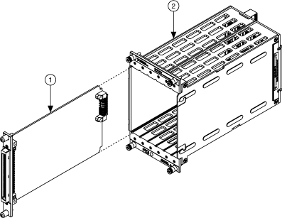

NI SwitchBlock 载体可以在 MAX 的 NI SwitchBlock 配置面板中进行配置，以创建单卡或多卡 NI SwitchBlock 设备。
NI SwitchBlock 卡在 NI SwitchBlock 载体内运行，与 PXI 开关模块相比，占用空间更小，开关密度更高。下图表示 NI SwitchBlock 卡和载体。
|  | |||||
|
每张卡有两种类型，A 型和 B 型，它们仅在它们路由到前面板连接器的信号方面有所不同。有关 A 型和 B 型卡之间差异的信息，请参阅NI SwitchBlock 设备参考。
有关特定于卡的信息，请参阅您的卡的设备手册。
NI SwitchBlock 设备是一种软件结构，代表一个或多个在软件中配置为设备的卡。请参阅在 MAX 中配置 NI SwitchBlock以指定哪些卡构成您的 NI SwitchBlock 中的设备。NI SwitchBlock 设备参考包含将卡组合到设备中的指南。
|
注 所有 NI SwitchBlock 设备都以相同的方式编程，无论组成它们的 NI SwitchBlock 卡的数量如何。 |
为了最大限度地提高构成 NI SwitchBlock 设备的卡的 AC 性能，NI 建议尽可能采用以下做法：
 提交有关此主题的反馈。
提交有关此主题的反馈。 访问ni.com/support以获得技术支持。
访问ni.com/support以获得技术支持。